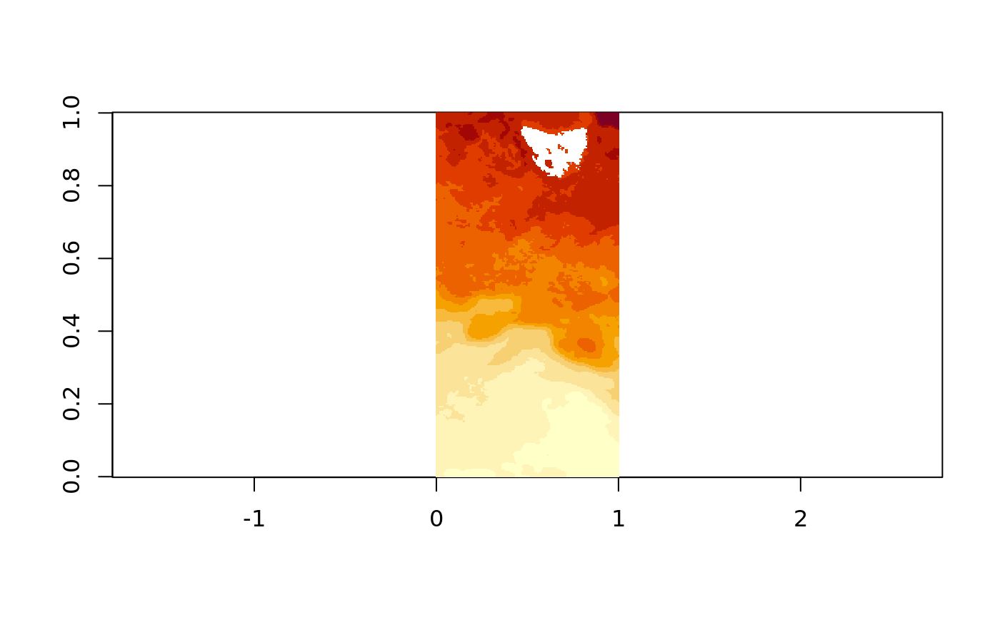

There’s a function vapour_read_attributes that returns the attributes as list of vectors.
pfile <- system.file("extdata", "point.shp", package = "vapour")
library(vapour)
vapour_read_attributes(pfile)
#> $a
#> [1] 1 2 3 4 5 6 7 8 9 10mvfile <- system.file("extdata", "tab", "list_locality_postcode_meander_valley.tab", package="vapour")
dat <- as.data.frame(vapour_read_attributes(mvfile), stringsAsFactors = FALSE)
dim(dat)
#> [1] 58 11
head(dat)
#> LOCAL_ID NAME POSTCODE PLAN_REF GAZ_DATE NOM_REG_NO
#> 1 100422 Caveside 7304 CPR5322 1970-01-01 947L
#> 2 100366 Weegena 7304 CPR5327 1970-01-01 1300M
#> 3 100337 Kimberley 7304 CPR5361 1970-01-01 1063T
#> 4 100308 Parkham 7304 CPR5327 1970-01-01 1179Y
#> 5 100263 Frankford 7275 CPR5142 1970-01-01 1003Q
#> 6 100311 Bridgenorth 7277 CPR5140 1970-01-01 925X
#> UFI CREATED_ON
#> 1 {4a5db4da-ca19-41a0-8dd4-c28a14bbee18} 2016-03-04 10:42:37
#> 2 {253b676e-2791-469c-ac5e-9cb3a95cc158} 2015-06-19 13:46:50
#> 3 {75f60a99-4c58-4d3e-911d-bbaa9a04164c} 2016-09-16 10:54:56
#> 4 {b008d456-4e80-4237-80f6-a26c03817e3c} 2014-06-06 16:50:22
#> 5 {953f4006-6397-4d03-af97-507eab170862} 2014-12-08 09:07:12
#> 6 {5cf8e2a3-631c-4d52-a79c-0ce475f76848} 2015-05-11 10:49:09
#> LIST_GUID SHAPE_AREA SHAPE_LEN
#> 1 {839edd46-01a7-4a45-9d97-499962fa952b} -9999 39785.88
#> 2 {de35ebd4-0ac0-4299-947d-87d07c69426a} -9999 31587.54
#> 3 {73ced9ad-ee9a-41d5-a5bc-c95c4ab948d9} -9999 35693.32
#> 4 {37f17d1f-d2a0-4b78-ba0d-e5f62f216658} -9999 67614.51
#> 5 {47f3a313-913f-4f83-8dc1-021907f9ee80} -9999 70140.78
#> 6 {425d01cc-223b-4348-b965-384a98fd7999} -9999 38156.70A low-level function will return a character vector of JSON, GML, KML or WKT.
vapour_read_geometry(pfile)[5:6] ## format = "WKB"
#> [[1]]
#> [1] 01 01 00 00 00 00 00 60 08 18 ad ec 3f 00 00 e0 9a ec 77 e2 3f
#>
#> [[2]]
#> [1] 01 01 00 00 00 00 00 c0 40 3c bb d0 3f 00 00 80 0e 30 25 d5 3f
vapour_read_geometry_text(pfile)[5:6] ## format = "json"
#> [[1]]
#> [1] "{ \"type\": \"Point\", \"coordinates\": [ 0.89612962375395, 0.577139189234003 ] }"
#>
#> [[2]]
#> [1] "{ \"type\": \"Point\", \"coordinates\": [ 0.261427939636633, 0.330394758377224 ] }"
vapour_read_geometry_text(pfile, textformat = "gml")[2]
#> [[1]]
#> [1] "<gml:Point><gml:coordinates>0.145755324047059,0.395469118840992</gml:coordinates></gml:Point>"
## don't do this with a non-longlat data set like cfile
vapour_read_geometry_text(pfile, textformat = "kml")[1:2]
#> [[1]]
#> [1] "<Point><coordinates>0.623376188334078,0.380098037654534</coordinates></Point>"
#>
#> [[2]]
#> [1] "<Point><coordinates>0.145755324047059,0.395469118840992</coordinates></Point>"
cfile <- system.file("extdata/sst_c.gpkg", package = "vapour")
str(vapour_read_geometry_text(cfile, textformat = "wkt")[1:2])
#> List of 2
#> $ : chr "MULTILINESTRING ((-16254.4210476553 -3269904.98849485,-48956.5880244328 -3282652.40200143,-82133.8545994558 -33"| __truncated__
#> $ : chr "MULTILINESTRING ((-18812.5003359828 -3784514.28779524,-40153.6937313319 -3789439.97415405,-37747.2881609 -38569"| __truncated__Combine these together to get a custom data set.
library(dplyr)
#>
#> Attaching package: 'dplyr'
#> The following objects are masked from 'package:stats':
#>
#> filter, lag
#> The following objects are masked from 'package:base':
#>
#> intersect, setdiff, setequal, union
dat <- as.data.frame(vapour_read_attributes(cfile), stringsAsFactors = FALSE) %>%
dplyr::mutate(wkt = vapour_read_geometry_text(cfile, textformat = "wkt"))
glimpse(dat)
#> Observations: 7
#> Variables: 3
#> $ level <chr> "275", "280", "285", "290", "295", "300", "305"
#> $ sst <dbl> 1.85, 6.85, 11.85, 16.85, 21.85, 26.85, 31.85
#> $ wkt <list> ["MULTILINESTRING ((-16254.4210476553 -3269904.98849485,-…There is a function vapour_read_extent to return a straightforward bounding box vector for every feature, so that we can flexibly build an index of a data set for later use.
mvfile <- system.file("extdata", "tab", "list_locality_postcode_meander_valley.tab", package="vapour")
str(head(vapour_read_extent(mvfile)))
#> List of 6
#> $ : num [1:4] 448353 457706 5386606 5397352
#> $ : num [1:4] 453544 459318 5403972 5412505
#> $ : num [1:4] 454840 461042 5411562 5417892
#> $ : num [1:4] 461505 476213 5410911 5424854
#> $ : num [1:4] 471573 483157 5417110 5424645
#> $ : num [1:4] 491638 494048 5417262 5419331This makes for a very lightweight summary data set that will scale to hundreds of large inputs.
There is a vapour_geom_summary() function to read only the information about each geometry.
vapour_geom_summary(mvfile)
#> $FID
#> [1] 1 2 3 4 5 6 7 8 9 10 11 12 13 14 15 16 17 18 19 20 21 22 23
#> [24] 24 25 26 27 28 29 30 31 32 33 34 35 36 37 38 39 40 41 42 43 44 45 46
#> [47] 47 48 49 50 51 52 53 54 55 56 57 58
#>
#> $valid_geometry
#> [1] TRUE TRUE TRUE TRUE TRUE TRUE TRUE TRUE TRUE TRUE TRUE TRUE TRUE TRUE
#> [15] TRUE TRUE TRUE TRUE TRUE TRUE TRUE TRUE TRUE TRUE TRUE TRUE TRUE TRUE
#> [29] TRUE TRUE TRUE TRUE TRUE TRUE TRUE TRUE TRUE TRUE TRUE TRUE TRUE TRUE
#> [43] TRUE TRUE TRUE TRUE TRUE TRUE TRUE TRUE TRUE TRUE TRUE TRUE TRUE TRUE
#> [57] TRUE TRUE
#>
#> $type
#> [1] 3 6 3 3 6 3 6 3 3 3 3 3 3 6 3 6 3 3 3 3 3 3 3 3 3 3 3 3 3 3 3 3 3 3 3
#> [36] 3 3 3 3 3 3 6 3 3 6 3 3 3 3 3 6 3 3 3 6 3 3 3
#>
#> $xmin
#> [1] 448353.3 453543.6 454839.8 461504.9 471572.5 491638.3 508512.4
#> [8] 435993.1 453298.4 457591.8 465137.3 495773.4 489938.9 459055.7
#> [15] 455980.3 475888.9 480223.5 485858.0 505330.1 412718.7 418130.0
#> [22] 452420.0 459778.6 471218.9 457719.0 486794.4 488189.9 479267.6
#> [29] 487082.1 507191.9 432998.3 457812.6 470867.5 481799.9 493482.6
#> [36] 416790.0 432185.6 462417.0 473322.8 466297.7 488006.2 500476.3
#> [43] 422717.5 436392.9 448464.2 459377.3 475501.6 476793.1 495935.5
#> [50] 425270.0 439927.1 468038.6 457540.6 495086.2 503880.4 502594.7
#> [57] 506074.8 506637.3
#>
#> $xmax
#> [1] 457705.8 459318.0 461042.0 476213.0 483157.2 494048.2 510057.3
#> [8] 444516.8 462671.3 473356.6 477417.7 507915.4 499711.7 471904.7
#> [15] 463978.7 493826.3 490958.3 494029.1 508582.3 433693.8 431437.0
#> [22] 460772.2 470225.2 485529.5 469430.2 497211.2 498091.5 487580.6
#> [29] 491199.8 508681.9 441412.9 463400.1 483434.3 490524.1 506412.5
#> [36] 424280.7 439290.6 469411.5 481799.9 472555.8 497238.9 505427.0
#> [43] 443693.4 455344.9 450389.7 465846.6 482058.2 484115.0 499732.6
#> [50] 449448.4 462874.4 477379.7 466788.4 500371.5 507861.2 507481.2
#> [57] 509426.1 511687.5
#>
#> $ymin
#> [1] 5386606 5403972 5411562 5410911 5417110 5417262 5408709 5392900
#> [9] 5383592 5377059 5394645 5396427 5410677 5418849 5392870 5379077
#> [17] 5397052 5407194 5407832 5364102 5352613 5395775 5398391 5383849
#> [25] 5407328 5391896 5396973 5412326 5405846 5409572 5402891 5408117
#> [33] 5404320 5388711 5403349 5390142 5396541 5391797 5392390 5407297
#> [41] 5385526 5409888 5364752 5390197 5404212 5397255 5400269 5394878
#> [49] 5389589 5353987 5358223 5378281 5403285 5393786 5396801 5402752
#> [57] 5404305 5405460
#>
#> $ymax
#> [1] 5397352 5412505 5417892 5424854 5424645 5419331 5409648 5402213
#> [9] 5393869 5397051 5408531 5405789 5418328 5425154 5399259 5389494
#> [17] 5414286 5418267 5411813 5392659 5368181 5404447 5405474 5395087
#> [25] 5420616 5400794 5409378 5419668 5410168 5411550 5406595 5415279
#> [33] 5419938 5398922 5412391 5396738 5404521 5398604 5399469 5412735
#> [41] 5393899 5413864 5398969 5405569 5404797 5404093 5408109 5400905
#> [49] 5396934 5383046 5393865 5388344 5409104 5399069 5404336 5406382
#> [57] 5408099 5409603Each function that relates to geometry includes arguments skip_n and limit_n to first specify the number of features to ignore, and second to set a maximum number of features visited. These interact, and so can be used to scan through a source. Both are applied after the sql argument.
vapour_geom_summary(mvfile, limit_n = 4)$FID
#> [1] 1 2 3 4
vapour_geom_summary(mvfile, skip_n = 2, limit_n = 6)$FID
#> [1] 3 4 5 6
vapour_geom_summary(mvfile, skip_n = 6)$FID
#> [1] 7 8 9 10 11 12 13 14 15 16 17 18 19 20 21 22 23 24 25 26 27 28 29
#> [24] 30 31 32 33 34 35 36 37 38 39 40 41 42 43 44 45 46 47 48 49 50 51 52
#> [47] 53 54 55 56 57 58Each geometry function also includes an extent argument, which takes a simple vector of four values xmin, xmax, ymin, ymax or sp bbox, sf bbox, or raster extent. This is only applied if the sql argument is non empty, and corresponds to the SpatialFilter argument of ExecuteSQL.
Find raster info.
f <- system.file("extdata", "sst.tif", package = "vapour")
vapour_raster_info(f)
#> $geotransform
#> [1] 140.00000000 0.07000000 0.00000000 -39.99722207 0.00000000
#> [6] -0.07000389
#>
#> $dimXY
#> [1] 143 286
#>
#> $minmax
#> [1] NA NA
#>
#> $tilesXY
#> [1] 143 14
#>
#> $projection
#> [1] "GEOGCS[\"WGS 84\",DATUM[\"WGS_1984\",SPHEROID[\"WGS 84\",6378137,298.257223563,AUTHORITY[\"EPSG\",\"7030\"]],AUTHORITY[\"EPSG\",\"6326\"]],PRIMEM[\"Greenwich\",0],UNIT[\"degree\",0.0174532925199433],AUTHORITY[\"EPSG\",\"4326\"]]"
#>
#> $bands
#> [1] 1Read raster data (requires explicit setting of window argument, and is not useful without being used in the context of the raster dimensions).
vapour_read_raster(f, window = c(0, 0, 6, 5))
#> [1] 285.720 285.685 285.631 285.698 285.825 285.891 285.766 285.743
#> [9] 285.738 285.786 285.897 285.999 285.649 285.702 285.671 285.693
#> [17] 285.768 285.849 285.735 285.763 285.718 285.698 285.746 285.831
#> [25] 285.912 285.983 285.894 285.809 285.760 285.881
## the final two arguments specify up- or down-sampling
## controlled by resample argument
vapour_read_raster(f, window = c(0, 0, 6, 5, 8, 9))
#> [1] 285.720 285.685 285.685 285.631 285.698 285.825 285.825 285.891
#> [9] 285.720 285.685 285.685 285.631 285.698 285.825 285.825 285.891
#> [17] 285.766 285.743 285.743 285.738 285.786 285.897 285.897 285.999
#> [25] 285.766 285.743 285.743 285.738 285.786 285.897 285.897 285.999
#> [33] 285.649 285.702 285.702 285.671 285.693 285.768 285.768 285.849
#> [41] 285.735 285.763 285.763 285.718 285.698 285.746 285.746 285.831
#> [49] 285.735 285.763 285.763 285.718 285.698 285.746 285.746 285.831
#> [57] 285.912 285.983 285.983 285.894 285.809 285.760 285.760 285.881
#> [65] 285.912 285.983 285.983 285.894 285.809 285.760 285.760 285.881
## if window is not included, and native TRUE then we get the entire window
str(vapour_read_raster(f, native = TRUE))
#> num [1:40898] 286 286 286 286 286 ...
## notice this is the length of the dimXY above
prod(vapour_raster_info(f)$dimXY)
#> [1] 40898By chaining together what we know about how raster data works we can get exactly what we want from GDAL.
mm <- matrix(vapour_read_raster(f, native = TRUE),
vapour_raster_info(f)$dimXY)
mm[mm < -1e6] <- NA
image(mm[,ncol(mm):1], asp = 2)
An example of using this facility interactively is in lazyraster.
SQL is available for general GDAL vector data.
Note that each lower-level function accepts a sql argument, which sends a query to the GDAL library to be executed against the data source, this can create custom layers and so is independent of and ignores the layer argument. Note that the same sql statement can be passed to the geometry readers, so we get the matching sets of information. vapour_read_geometry will return NULL for each missing geometry if the statement doesn’t include geometry explicitly or implicitly, but vapour_read_geometry, vapour_read_geometry_text and vapour_read_extent all explicitly modify the statement "SELECT *". (We are also assuming the data source hasn’t changed between accesses … let me know if this causes you problems!).
vapour_read_attributes(mvfile, sql = "SELECT NAME, PLAN_REF FROM list_locality_postcode_meander_valley WHERE POSTCODE < 7291")
#> $NAME
#> [1] "Frankford" "Bridgenorth" "Summerhill"
#> [4] "Blackstone Heights" "Lake St Clair" "Trevallyn"
#> [7] "Riverside" "Hadspen" "Travellers Rest"
#> [10] "Prospect Vale"
#>
#> $PLAN_REF
#> [1] "CPR5142" "CPR5140" "CPR5150" "CPR5326" "CPR5570" "CPR5155" "CPR5140"
#> [8] "CPR5329" "CPR5326" "CPR5325"
vapour_read_attributes(mvfile, sql = "SELECT NAME, PLAN_REF, FID FROM list_locality_postcode_meander_valley WHERE POSTCODE = 7306")
#> $NAME
#> [1] "Cradle Mountain" "Mount Roland" "Middlesex" "Lower Beulah"
#>
#> $PLAN_REF
#> [1] "CPR5363" "CPR5359" "CPR5362" "CPR5361"
#>
#> $FID
#> [1] 20 31 36 45Also note that FID is a special row number value, to be used a as general facility for selecting by structural row. This FID is driver-dependent, it can be 0- or 1-based, or completely arbitrary.
Variously, drivers (GDAL’s formats) are 0- or 1- based with the FID. Others (such as OSM) are arbitrary, and have non-sequential (and presumably persientent) FID values.
library(vapour)
file0 <- "list_locality_postcode_meander_valley.tab"
mvfile <- system.file("extdata/tab", file0, package="vapour")
layer <- gsub(".tab$", "", basename(mvfile))
## get the number of features by FID (DISTINCT should be redundant here)
vapour_read_attributes(mvfile, sql = sprintf("SELECT COUNT(DISTINCT FID) AS nfeatures FROM %s", layer))
#> $nfeatures
#> [1] 58
## note how TAB is 1-based
vapour_read_attributes(mvfile, sql = sprintf("SELECT COUNT(*) AS n FROM %s WHERE FID < 2", layer))
#> $n
#> [1] 1
## but SHP is 0-based
shp <- system.file("extdata/point.shp", package="vapour")
vapour_read_attributes(shp, sql = sprintf("SELECT COUNT(*) AS n FROM %s WHERE FID < 2", "point"))
#> $n
#> [1] 2See http://www.gdal.org/ogr_sql.html
There are many useful higher level operations that can be used with this. The simplest is the ability to use GDAL as a database-like connection to attribute tables.
Find the GDAL version and drivers available.
vapour_gdal_version()
#> [1] "GDAL 2.4.0, released 2018/12/14"
str(vapour_all_drivers())
#> List of 7
#> $ driver : chr [1:224] "VRT" "DERIVED" "GTiff" "NITF" ...
#> $ name : chr [1:224] "Virtual Raster" "Derived datasets using VRT pixel functions" "GeoTIFF" "National Imagery Transmission Format" ...
#> $ vector : logi [1:224] FALSE FALSE FALSE FALSE FALSE FALSE ...
#> $ raster : logi [1:224] TRUE TRUE TRUE TRUE TRUE TRUE ...
#> $ create : logi [1:224] TRUE FALSE TRUE TRUE FALSE FALSE ...
#> $ copy : logi [1:224] TRUE FALSE TRUE TRUE FALSE FALSE ...
#> $ virtual: logi [1:224] TRUE FALSE TRUE TRUE TRUE TRUE ...Find the driver that will be used for a given data source.